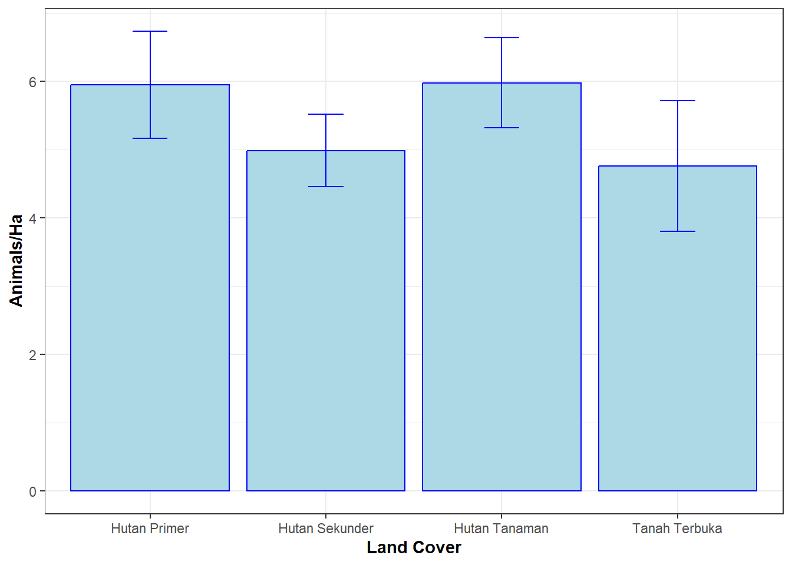

Pada bagian ini, akan dijelaskan secara umum tentang eksplorasi dan visualisasi data kehati menggunakan Rstudio. RStudio adalah perangkat lunak yang sangat populer digunakan oleh para peneliti dan analis data untuk memproses, menganalisis, dan visualisasi data. Keuntungan menggunakan RStudio adalah dapat mengakses dan menggunakan berbagai paket dan fungsi statistik yang tersedia secara gratis. Selain itu, RStudio juga memungkinkan pengguna untuk mengintegrasikan skrip dan luaran dalam satu tempat, sehingga analisa yang dijalankan dapat dengan mudah direplikasi pada kajian yang lain.
Namun, terdapat beberapa kekurangan dalam menggunakan RStudio, seperti tampilan antarmuka pengguna yang kurang intuitif dan sulit dipelajari bagi pemula. Selain itu, pengguna harus memahami bahasa pemrograman R untuk dapat menggunakan RStudio secara efektif. Perlu diingat bahwa ini hanya merupakan pengantar dan untuk memahami seluruh aspek dari Rstudio, diperlukan pembelajaran yang lebih mendalam.
Klik bagian ini bagi pengguna R pertama kali
Penjelasan dan langkah instalasi R studio dapat dilihat pada tautan berikut ini ‘Panduan instalasi Rstudio’. Ikuti langkah yang ada pada panduan tersebut hingga bagian instalasi Rtools!
Setelah itu salin dan tempel seluruh skrip dibawah ini di konsol Rstudio kalian;
for (package in packages) { if (!requireNamespace(package, quietly = TRUE)) { install.packages(package) }
library(package, character.only = TRUE) }
install.packages(“remotes”)
remotes::install_github(“gavinsimpson/ggvegan”)
Important
Seluruh data yang dipergunakan dalam panduan ini merupakan data simulasi. Seluruh analisa yang dihasilkan dalam panduan ini hanya berupaya untuk menjelaskan interpretasi dan eksplorasi data keanekaragaman hayati tanpa menggambarkan kondisi aktual pada kawasan tersebut.
11.1 Analisis kekayaan dan keseragaman spesies
Pada bagian ini akan melihat bagaimana komposisi spesies dari setiap unit cuplik berbeda satu sama lain, langkah pertama yang harus dilakukan adalah memuat data dan paket yang dibutuhkan
##Memuat paket yang dibutuhkan----library(tidyverse)library(BiodiversityR)library(SpadeR)library(iNEXT)library(ggrepel)library(ggplot2)library(ggvegan)library(kableExtra)library(unmarked)##Memuat dataset----# Mengunduh data dan memuat datadownload.file("https://github.com/ryanavri/Biodive-survey/raw/main/data_clean.RData", "data_clean.RData")load("data_clean.RData")#Melihat struktur datastr(raw_m)
Pada Gambar 11.1 yang ditampilkan, jumlah spesies yang teridentifikasi dalam satu transek berkisar antara 3 hingga 6 spesies, dengan kelimpahan individu antara 18 hingga 73. Pada tabel tersebut secara sekilas mungkin kita akan menarik kesimpulan bahwa transek 1 dan 2 memiliki keanekaragaman yang lebih tinggi dibanding transek lainnya. Indeks kekayaan jenis, terutama indeks Shannon, mempertimbangkan proporsi kemerataan individu di setiap jenis. Selanjutnya, gunakan skrip dibawah ini untuk membuat grafik perbandingan indeks keanekaragaman jenis.
pada Gambar 11.2 diatas, nilai indeks shannon ternyata lebih tinggi di transek 4. Hal ini disebabkan karena ketimpangan antar individu di setiap spesies jauh lebih kecil dibandingkan dengan transek 1 dan 2, meskipun jumlah spesies di kedua transek tersebut lebih banyak.
Selanjutnya, kita dapat menginvestigasi lebih lanjut untuk menentukan apakah benar ada spesies yang mendominasi pada kawasan tersebut. Kondisi ini ditandai dengan nilai evenness yang rendah dan nilai dominansi simpson yang tinggi. Gunakan skrip dibawah ini untuk membuat plot indeks kemerataan dan dominansi jenis.
Pada Gambar 11.3 diatas, terlihat bahwa transek 1 dan 2 menunjukan kemerataan (evenness) yang rendah dan nilai dominansi (simpson) yang lebih tinggi dibandingkan dengan transek lainnya, sehingga kita dapat menarik kesimpulan bahwa meskipun dari jumlah spesies transek 1 dan 2 ditemukan spesies lebih banyak namun keduanya memiliki ketimpangan proporsi jumlah individu yang cukup tinggi juga.
Gunakan skrip dibawah ini dapat digunakan untuk memeriksa lebih dalam, spesies apa yang sebetulnya mendominasi dikedua transek tersebut.
Setelah itu kita dapat membuat grafiknya dengan skrip berikut ini
#Membuat plot kelimpahan jenisggplot(abundance_table, aes(x =factor(Scientific.Name, levels =rev(sort(unique(Scientific.Name)))), y = abundance, fill = Transect)) +geom_bar(stat ="identity", position =position_dodge(width =0.8)) +labs(x ="Species", y ="Abundance", fill ="Transect") +facet_wrap(~ Transect, ncol =2) +scale_fill_viridis_d() +theme_bw() +theme(axis.text.x =element_text(angle =90, vjust =0.5, hjust=1),axis.text.y =element_text(face ="italic"),legend.position ="bottom",legend.box ="horizontal",legend.margin =margin(t =0, r =0, b =0, l =0),panel.border =element_rect(colour ="black", fill =NA, size =0.5)) +coord_flip()
Gambar 11.4: Grafik kelimpahan jenis di setiap transek
Pada Gambar 11.4 diatas memperlihatkan bahwa babi hutan (Sus scrofa) dan monyet ekor panjang (Macaca fascicularis) hampir selalu mendominasi pada setiap transek dimana pada transek 1 dan 2 terlihat dengan jelas bagaimana kedua spesies ini memiliki kelimpahan yang lebih banyak dibandingkan dengan spesies lainnya. Sebaliknya, pada transek 3, kelimpahan tiap jenisnya tidak jauh berbeda sehingga didapatkan indeks kemerataan tinggi dan indeks dominansi rendah
11.1.2 Indeks nilai penting pada vegetasi
Pada kajian vegetasi, terkadang nilai INP (Indeks Nilai Penting) dibutuhkan untuk melihat spesies yang mendominasi suatu ekosistem atau komunitas vegetasi. skrip dibawah ini dapat digunakan untuk membuat ringakasan INP dari data vegetasi (‘raw_t’). Hasilnya dapat dilihat pada Tabel 11.2 yang menunjukan 6 spesies dengan nilai INP tertinggi dari akumulasi nilai frekuensi, kepadatan dan dominasi relatif.
#Menghitung indeks nilai pentingival <- raw_t %>%group_by(Transect, Scientific.Name) %>%summarise(count =n(),basal =sum(0.7854*(dbh/100)^2)) %>%#konversi dbh (cm) ke basal area dalam meter persegiungroup() %>%as.data.frame() %>%importancevalue(site="Transect", species="Scientific.Name", count="count", basal="basal", factor="",level="") %>%as.data.frame() %>%mutate(across(3:last_col(), ~round(., 2)))
Tabel 11.2: Indeks nilai penting vegetasi
Indeks nilai penting vegetasi
frequency
density
dominance
frequency.percent
density.percent
dominance.percent
importance.value
Melanochyla caesia
1.0
121
20.32
6.71
17.82
16.70
41.23
Baccaurea macrocarpa
0.9
116
20.22
6.04
17.08
16.62
39.74
Antidesma neurocarpum
0.7
114
19.06
4.70
16.79
15.66
37.15
Symplocos fasciculata
1.0
103
18.28
6.71
15.17
15.02
36.90
Meiogyne virgata
0.8
106
19.34
5.37
15.61
15.90
36.88
Horsfieldia parviflora
0.4
6
0.90
2.68
0.88
0.74
4.31
11.1.3 Estimasi kekayaan jenis
Pada bagian ini, disajikan skrip untuk menghasilkan kurva akumulasi spesies (species accumulation curve) dari data avifauna (‘raw’). Metode ini umumnya digunakan untuk menilai apakah jumlah sampel yang diperoleh dalam survei sudah cukup untuk menggambarkan keanekaragaman spesies di suatu area.
#Menghitung kurva akumulasi spesies----out1 <- raw %>%count(Scientific.Name) %>%column_to_rownames(var ="Scientific.Name") %>%as.data.frame() %>%iNEXT(q=0, datatype ="abundance", conf =0.95, nboot =100) #nboot dapat ditingkatkan.
#Membuat grafik dari hasil tersebutggiNEXT(x = out1, type =1, color.var ="Order.q") +labs(x ="Number of Individuals", y ="Cumulative Species Richness") +theme_bw() +theme(axis.text =element_text(size =12),axis.title =element_text(size =14),legend.position ="bottom",legend.title =element_text(size =14),legend.text =element_text(size =12))
Gambar 11.5: Kurva akumulasi spesies berdasarkan jumlah sampel
Pada Gambar 11.5 tersebut, kurva masih meningkat secara bertahap dan belum mencapai titik jenuh (datar), ini mengindikasikan bahwa apabila ada penambahan jumlah sampel ada kemungkinan terdapat penambahan spesies-spesies baru dalam kajian tersebut.
Mengingat kurva menunjukkan potensi penambahan spesies baru seiring bertambahnya sampel, skrip dibawah ini dapat digunakan untuk memperkirakan potensi penemuan spesies baru menggunakan berbagai model estimator yang hasilnya disajikan pada Tabel 11.3. Pada berbagai model tersebut dihasilkan bahwa rerata pertambahan spesies dapat mencapai hingga 90-an spesies dari total 63 spesies yang dijumpai saat survei berlangsung.
#Estimasi kekayaan jenis----out2 <- raw %>%count(Scientific.Name) %>%column_to_rownames(var ="Scientific.Name") %>%as.data.frame() %>% SpadeR::ChaoSpecies(datatype ="abundance", k=3, conf =0.95) #k adalah jumlah kelimpahan yang dianggap spesies "langka"#Menampilkan tabel estimasi spesiesout2$Species_table
Tabel 11.3: Estimasi kekayaan jenis dari berbagai metode ekstrapolasi
Estimate
s.e.
95%Lower
95%Upper
Homogeneous Model
96.49
12.62
79.40
131.38
Homogeneous (MLE)
63.00
0.04
63.00
63.23
Chao1 (Chao, 1984)
103.85
20.37
79.22
165.88
Chao1-bc
99.20
17.80
77.53
153.14
iChao1 (Chiu et al. 2014)
110.73
14.48
89.68
148.39
ACE (Chao & Lee, 1992)
96.49
12.62
79.40
131.38
ACE-1 (Chao & Lee, 1992)
96.49
12.62
79.40
131.38
1st order jackknife
92.96
7.74
81.20
112.29
2nd order jackknife
111.91
13.39
91.88
145.84
11.2 Analisis perbedaan komposisi spesies
Pada bagian ini akan dibahas menganai analisis perbedaan komposisi spesies antara berbagai habitat atau lokasi survei. Analisis ini penting untuk memahami bagaimana keanekaragaman spesies dipengaruhi oleh faktor lingkungan. Dengan memahami perbedaan komposisi spesies di berbagai area, kita dapat mengidentifikasi pola sebaran spesies, hubungan antara spesies dan faktor lingkungan, serta mengevaluasi dampak perubahan lingkungan terhadap keanekaragaman hayati.
Pada bagian ini akan diperkenalkan beberapa metode statistik yang umum digunakan untuk analisis perbedaan komposisi spesies, termasuk perhitungan indeks ketidaksamaan, analisis klaster, dan metode multivariat lainnya serta cara menafsirkan dan menyajikan hasil analisis.
11.2.1 Mengukur perbedaan komunitas menggunakan klaster
Dalam bagian ini, kita akan membahas metode populer untuk mengukur perbedaan komunitas, yaitu analisis klaster berdasarkan ketidaksamaan Bray-Curtis dan Jaccard. Metode ini membantu mengidentifikasi pola sebaran dan hubungan antara komunitas berdasarkan perbedaan komposisi spesies. Analisis klaster ini penting dalam memahami hubungan antar komunitas spesies dan pengaruh faktor lingkungan.
Bray-Curtis menekankan perbedaan kelimpahan spesies antara komunitas, sementara indeks Jaccard fokus pada keberadaan atau ketiadaan spesies. Bray-Curtis cocok digunakan saat kita dapat mengidentifikasi kelimpahan spesies dengan tepat, seperti pengamatan burung menggunakan titik hitung. Skrip berikut ini dapat digunakan untuk menghitung dan menyajikan perbedaan tersebut.
# Membuat matriks temuan dari data burungdata_matrix <-table(raw$Transect, raw$Scientific.Name)# Menghitung dan membuat dendogram ketidaksamaan komunitasdata_matrix %>%vegdist(method ="bray") %>%hclust(method ="average") -> hc_transect# Membuat dendogram dari hasil tersebutplot(hc_transect, xlab ="", ylab ="Dissimilarity", sub ="Transect", hang =-1)rect.hclust(hc_transect, k =4, border =2:5) #k adalah jumlah grup, sesuaikan dengan data
Gambar 11.6: Klaster ketidaksamaan komunitas antar transek
Gambar 11.6 menunjukkan dendrogram klaster yang dihasilkan dari ketidaksamaan Bray-Curtis. Cabang-cabang dendrogram menggambarkan kelompok-kelompok komunitas yang mirip, dan tinggi cabang menunjukkan tingkat perbedaan antara kelompok-kelompok tersebut. Nilai pada sumbu Y mengindikasikan indeks ketidaksamaan; semakin kecil nilainya, semakin mirip komposisi spesies dan kelimpahan relatif antara kedua komunitas. Sebaliknya, nilai yang lebih tinggi menunjukkan perbedaan yang lebih besar dalam komposisi dan kelimpahan. Gambar tersebut menunjukkan bahwa TS01 dan TS02 memiliki komposisi spesies yang paling mirip, dan kedua transek ini berbeda jauh dari TS07 hingga TS10 dalam hal komposisi spesies.
Selanjutnya, skrip dibawah ini digunakan untuk menghitung ketidaksamaan Jaccard. Analisa ini digunakan ketika kelimpahan individunya tidak bisa diidentifikasi dengan pasti. Salah satu contohnya adalah ketika survei yang digunakan menggunakan perekam suara, dimana pengamat dapat mengidentifikasi perbedaan spesies, namun tidak bisa dengan pasti mengukur perbedaan individu dari suara-suara tersebut.
Skrip ini akan mengkonversi data perjumpaan yang kita miliki sebagai 0 dan 1, dimana angka 0 menunjukan spesies tidak ditemukan dalam transek dan 1 adalah spesies terdeteksi, berapapun jumlahnya.
#Jaccard dan binary data (presence/absence)data_matrix %>%vegdist(method ="jaccard", binary =TRUE) %>%hclust(method ="average") %>%plot(xlab="", ylab="Dissimilarity", sub="Transect", hang=-1)
11.2.2 Mengukur perbedaan komunitas menggunakan ordinasi
Pada bagian ini akan dibahas metode lain yang digunakan untuk mengukur perbedaan komunitas, yaitu analisis ordinasi. Ordinasi merupakan suatu teknik multivariat yang mengatur objek-objek (misalnya, komunitas atau spesies) dalam suatu ruang berdimensi rendah berdasarkan perbedaan atau kemiripan karakteristik mereka. Tujuan dari analisis ordinasi adalah untuk menyederhanakan data yang kompleks dan mengungkapkan pola yang mendasari struktur komunitas spesies. Pada contoh kode dibawah ini, akan menggunakan analisis koordinat non-metrik (NMDS) dengan ketidaksamaan Bray-Curtis.
# Membuat matriks kelimpahan spesiessp.abd <- raw %>%count(Transect, Scientific.Name) %>%pivot_wider(names_from = Scientific.Name, values_from = n, values_fill =list(n =0)) %>%column_to_rownames(var ="Transect")# menghitung nilai NMDS(mynmds <-metaMDS(sp.abd, distance ="bray"))
Wisconsin double standardization
Run 0 stress 0.07832448
Run 1 stress 0.07832449
... Procrustes: rmse 4.223574e-05 max resid 9.613214e-05
... Similar to previous best
Run 2 stress 0.07832449
... Procrustes: rmse 1.558519e-05 max resid 2.329932e-05
... Similar to previous best
Run 3 stress 0.06960334
... New best solution
... Procrustes: rmse 0.1917279 max resid 0.3719363
Run 4 stress 0.07832448
Run 5 stress 0.06960334
... Procrustes: rmse 1.220221e-05 max resid 1.845675e-05
... Similar to previous best
Run 6 stress 0.07832448
Run 7 stress 0.07832448
Run 8 stress 0.06960334
... Procrustes: rmse 6.833592e-06 max resid 1.172698e-05
... Similar to previous best
Run 9 stress 0.07832448
Run 10 stress 0.07832448
Run 11 stress 0.07832448
Run 12 stress 0.07832448
Run 13 stress 0.06960334
... New best solution
... Procrustes: rmse 9.468379e-06 max resid 1.751872e-05
... Similar to previous best
Run 14 stress 0.06960334
... Procrustes: rmse 1.410908e-05 max resid 2.554455e-05
... Similar to previous best
Run 15 stress 0.06960334
... Procrustes: rmse 1.211752e-05 max resid 1.834884e-05
... Similar to previous best
Run 16 stress 0.07832448
Run 17 stress 0.07832449
Run 18 stress 0.06960334
... New best solution
... Procrustes: rmse 1.149719e-06 max resid 1.764007e-06
... Similar to previous best
Run 19 stress 0.06960334
... New best solution
... Procrustes: rmse 9.36584e-06 max resid 1.731291e-05
... Similar to previous best
Run 20 stress 0.06960334
... Procrustes: rmse 3.682246e-05 max resid 6.425039e-05
... Similar to previous best
*** Best solution repeated 2 times
Call:
metaMDS(comm = sp.abd, distance = "bray")
global Multidimensional Scaling using monoMDS
Data: wisconsin(sp.abd)
Distance: bray
Dimensions: 2
Stress: 0.06960334
Stress type 1, weak ties
Best solution was repeated 2 times in 20 tries
The best solution was from try 19 (random start)
Scaling: centring, PC rotation, halfchange scaling
Species: expanded scores based on 'wisconsin(sp.abd)'
Pada hasil tersebut dapat dillihat bahwa nilai stres rendah (<0,2), menunjukkan bahwa hasil NMDS dapat diinterpretasikan dengan keyakinan yang lebih tinggi. Sedangkan nilai stres yang lebih tinggi menunjukkan bahwa interpretasi mungkin tidak dapat diandalkan. Selanjutnya, skrip dibawah ini digunakan untuk membuat plot NMDS dengan memberikan pilihan bahwa intuisi awal kita terdapat 4 kelompok utama.
# Membagi poin-point kedalam jumlah grup yang kita tentukanmyclusters <-kmeans(mynmds$points, centers=4, nstart=10) #ganti centers, untuk merubah jumlah grupgroup <-factor(myclusters$cluster)# Membuat plotplot(mynmds, type="n", main="NMDS Plot")points(mynmds, display="sites", col=group, pch=16)text(mynmds$points, labels=rownames(sp.abd), cex=0.7, pos =1)legend("bottomright", legend=unique(group), col=unique(group), pch=16, title ="Group")
Gambar 11.7: Grafik ordinasi kesamaan komposisi spesies antar transek
Gambar 11.7 menyajikan pola sebaran titik-titik sebagai perwakilan sampel, yang dalam konteks ini adalah transek. Jarak antara titik-titik ini menggambarkan tingkat kemiripan atau perbedaan dalam komposisi spesies antara komunitas. Jarak yang lebih dekat antara titik-titik menunjukkan komposisi spesies yang lebih mirip, sementara jarak yang lebih jauh menunjukkan perbedaan yang lebih besar. Dapat dilihat bahwa TS07 memiliki komposisi yang sangat jauh berbeda dibandingkan transek lainnya.
11.3 Pengaruh Faktor Lingkungan terhadap Kelimpahan Spesies: Model Linier Umum (GLM)
Bagian ini akan membahas penggunaan Model Linier Umum (GLM) dalam menganalisis pengaruh faktor lingkungan terhadap kelimpahan spesies. Model ini memungkinkan kita untuk mempelajari hubungan antara variabel dependen (misalnya, kelimpahan spesies) dan satu atau lebih variabel independen (faktor lingkungan). GLM fleksibel dalam mengakomodasi berbagai distribusi variabel respon, seperti distribusi poisson (kelimpahan) atau binomial (keberadaan/ketiadaan), yang umum ditemukan dalam data ekologi.
11.3.1 GLM dengan variabel kontinu
Skrip di bawah ini menunjukkan contoh analisis hubungan antara variabel kontinu, di mana kita akan mengevaluasi pengaruh elevasi, keragaman jenis pohon, kepadatan pohon, dan jumlah pohon pakan terhadap kelimpahan merpati hijau Sumatra (Treron oxyurus).
#Menghitung kelimpahan spesies disetiap transekspecies_abundance <- raw %>%filter(Scientific.Name =="Treron oxyurus") %>%#ganti nama spesies ini untuk jenis lainnyagroup_by(Transect) %>%summarise(Abundance =n())#menggabungkan data kelimpahan dan variabel lingkunganraw_env_bird <-left_join(raw_env, species_abundance, by ="Transect") %>%replace_na(list(Abundance =0))glm1 <-glm(Abundance ~ Elev + Tree.count + Tree.rich + Imp.Tree, data = raw_env_bird, family ="poisson") #GLM menggunakan poissonglm2 <-glm(Abundance ~ Elev + Tree.count + Tree.rich + Imp.Tree, data = raw_env_bird, family ="quasipoisson") #GLM dengan quasipoison#periksa ringkasan hasil kedua model tersebutsummary(glm1)summary(glm2)
Call:
glm(formula = Abundance ~ Elev + Tree.count + Tree.rich + Imp.Tree,
family = "poisson", data = raw_env_bird)
Coefficients:
Estimate Std. Error z value Pr(>|z|)
(Intercept) -2.0339395 1.0080291 -2.018 0.04362 *
Elev 0.0005957 0.0004688 1.271 0.20384
Tree.count 0.0033233 0.0079028 0.421 0.67410
Tree.rich 0.1113168 0.0372917 2.985 0.00284 **
Imp.Tree 0.0026611 0.0252308 0.105 0.91600
---
Signif. codes: 0 '***' 0.001 '**' 0.01 '*' 0.05 '.' 0.1 ' ' 1
(Dispersion parameter for poisson family taken to be 1)
Null deviance: 91.907 on 9 degrees of freedom
Residual deviance: 10.407 on 5 degrees of freedom
AIC: 48.371
Number of Fisher Scoring iterations: 6
Berdasarkan ringkasan kedua model di atas, nilai dispersinya mendekati 1, sehingga kita akan menggunakan GLM dengan distribusi Poisson. Hasil tersebut menunjukkan bahwa variabel yang signifikan (P < 0.05) adalah keragaman jenis pohon dengan nilai positif, yang mengindikasikan bahwa semakin beragam vegetasi di suatu area, kelimpahan burung tersebut cenderung lebih tinggi.
Selanjutnya, skrip dibawah ini bisa digunakan untuk membuat plot yang menggambarkan pengaruh keragaman jenis pohon terhadap kelimpahan burung.
# Membuat tabel prediksi dari model terbaikpred_df <-data.frame(Tree.rich =seq(min(raw_env_bird$Tree.rich), max(raw_env_bird$Tree.rich), length.out =1000), Elev =mean(raw_env_bird$Elev),Tree.count =mean(raw_env_bird$Tree.count),Imp.Tree =mean(raw_env_bird$Imp.Tree))pred_df$Abundance <-predict(glm1, newdata = pred_df, type ="response")# Membuat plot prediksi kelimpahan burung dari keragaman jenis pohonggplot(raw_env_bird, aes(x = Tree.rich, y = Abundance)) +geom_point(alpha =0.5, color ="#3B6B9A") +geom_smooth(method ="glm", method.args =list(family ="poisson"), se =TRUE, color ="#8C510A") +theme_bw(base_size =16) +ggtitle("Predicted abundance by tree richness") +xlab("Tree richness") +ylab("Predicted abundance") +theme(plot.title =element_text(hjust =0.5, size =20),axis.title.x =element_text(size =20),axis.title.y =element_text(size =20),axis.text.x =element_text(size =16),axis.text.y =element_text(size =16),legend.title =element_blank(),legend.text =element_text(size =16),legend.position ="bottom")
Gambar 11.8: Grafik pengaruh keanekaragaman pohon terhadap kelimpahan burung merpati hijau
11.3.2 GLM dengan variable kategori
Bagian ini akan membahas penggunaan Model Linier Umum (GLM) dalam menganalisis pengaruh faktor lingkungan tipe kategori terhadap kelimpahan spesies. Dalam contoh ini, kita akan mengevaluasi pengaruh tutupan lahan, yang mencakup hutan primer, hutan sekunder, hutan tanaman, dan tanah terbuka, terhadap kelimpahan merpati hijau Sumatra (Treron oxyurus). Skrip di bawah ini menunjukkan cara menggunakan GLM untuk memodelkan hubungan antara kelimpahan burung dengan variabel kategori tutupan lahan.
### GLM untuk variabel kategoriglm3 <-glm(Abundance ~ Tuplah, data = raw_env_bird, family ="poisson")glm4 <-glm(Abundance ~ Tuplah, data = raw_env_bird, family ="quasipoisson")summary(glm3)summary(glm4)
Call:
glm(formula = Abundance ~ Tuplah, family = "poisson", data = raw_env_bird)
Coefficients:
Estimate Std. Error z value Pr(>|z|)
(Intercept) 3.0681 0.1525 20.119 < 2e-16 ***
TuplahHutan Sekunder -0.9578 0.2314 -4.139 3.49e-05 ***
TuplahHutan Tanaman -3.4735 0.7234 -4.802 1.57e-06 ***
TuplahTanah Terbuka -20.3706 3467.8585 -0.006 0.995
---
Signif. codes: 0 '***' 0.001 '**' 0.01 '*' 0.05 '.' 0.1 ' ' 1
(Dispersion parameter for poisson family taken to be 1)
Null deviance: 91.907 on 9 degrees of freedom
Residual deviance: 10.845 on 6 degrees of freedom
AIC: 46.809
Number of Fisher Scoring iterations: 15
Hasil analisis GLM terbaik menggunakan model Poisson pada model glm3, karena nilai dispersinya mendekati 1. hasil tersebut menunjukan bahwa kelimpahan merpati hijau Sumatra (Treron oxyurus) secara signifikan lebih tinggi di hutan primer dibandingkan dengan hutan sekunder dan hutan tanaman. Perbedaan kelimpahan burung di hutan sekunder dan hutan tanaman lebih rendah daripada di hutan primer, dengan nilai yang signifikan (P<0.05) untuk kedua kategori tersebut. Sementara itu, tidak ada bukti yang cukup untuk menyatakan perbedaan signifikan antara kelimpahan burung di tanah terbuka dengan hutan primer.
Selanjutnya anda dapat menggunakan skrip dibawah ini untuk membuat plot dari model tersebut
# Membuat tabel prediksi dari model terbaikpred_df <-data.frame(Tuplah =unique(raw_env_bird$Tuplah))pred_df$Predicted <-predict(glm3, newdata = pred_df, type ="response", se.fit =TRUE)$fitpred_df$SE <-predict(glm3, newdata = pred_df, type ="response", se.fit =TRUE)$se.fit# Membuat plot prediksi kelimpahan burung dari perbedaan tutupan lahanggplot(data = pred_df, aes(x = Tuplah, y = Predicted, fill = Tuplah)) +geom_bar(stat ="identity", position =position_dodge(), color ="black") +geom_errorbar(aes(ymin = Predicted - SE, ymax = Predicted + SE), position =position_dodge(width =0.9), width =0.2) +scale_fill_manual(values =c("#74C476", "#6BAED6", "#FD8D3C", "#9E9AC8")) +labs(x ="Landcover", y ="Predicted abundance",title ="Predicted abundance by landcover",fill ="") +theme_bw() +theme(plot.title =element_text(size =14, face ="bold", hjust =0.5),axis.title =element_text(size =12, face ="bold"),axis.text =element_text(size =10),legend.title =element_blank(),legend.text =element_text(size =10),legend.position ="bottom",panel.grid =element_blank(),panel.background =element_blank(),panel.border =element_rect(colour ="black", fill =NA, size =0.5))
Gambar 11.9: Grafik pengaruh tutupan lahan terhadap kelimpahan burung
11.4 Pengaruh Faktor Lingkungan terhadap komposisi Spesies: Canonical Correspondence Analysis (CCA)
Bagian ini akan membahas analisis menggunakan Canonical Correspondence Analysis (CCA). CCA merupakan metode multivariat yang digunakan untuk menganalisis hubungan antara variabel lingkungan dengan pola komposisi spesies dalam suatu komunitas. Melalui analisis CCA, kita dapat mengidentifikasi faktor lingkungan yang paling berpengaruh terhadap komposisi spesies, serta membuat visualisasi hubungan antara spesies, kondisi lingkungan, dan lokasi transek dalam bentuk grafik dua dimensi.
Skrip dibawah ini dapat digunakan untuk melalukan analisa CCA secara sederhana mengenai komposisi komunitas burung di setiap transek terhadap perbedaan elevasi, keanekaragaman pohon, kelimpahan pohon penting dan tutupan lahan.
# Membuat matriks kelimpahan spesiessp.abd <- raw %>%count(Transect, Scientific.Name) %>%pivot_wider(names_from = Scientific.Name, values_from = n, values_fill =list(n =0)) %>%column_to_rownames(var ="Transect")# Membuat matriks variabel lingkungansp.env <- raw_env %>%column_to_rownames(var ="Transect") %>%select (c(3:7)) %>%mutate(Elev =scale(Elev)) %>%#opsional, jika ingin menstandarisasi datamutate(Tree.count =scale(Tree.count)) %>%mutate(Imp.Tree =scale(Imp.Tree)) %>%mutate(Tree.rich =scale(Tree.rich)) %>%mutate(Tuplah =as.factor(Tuplah))# Menghitung CCA dengan variabel lingkunganOM1 <-cca(sp.abd ~ Elev + Tuplah + Tree.count + Tree.rich, sp.env)# Membuat plot sederhanaplot1 <-plot(OM1, display=c("bp", "sp", "sites"))
Gambar 11.10: Grafik ordinasi CCA sederhana
Plot yang ditampilkan pada Gambar 11.10 diatas dapat dimodifikasi agar lebih mudah dibaca dengan menggunakan fungsi dari ggplot pada skrip dibawah ini.
# Konversi hasil perhitungan CCA kedalam data framedf <-fortify(OM1)# memilih 10 spesies yang paling dominandom_sp <- raw %>%group_by(Scientific.Name) %>%summarise(abundance =n()) %>%arrange(desc(abundance)) %>%slice(1:10)# Membuat plot baru dengan ggplotggplot() +geom_vline(xintercept =c(0), color ="grey70", linetype =2) +geom_hline(yintercept =c(0), color ="grey70", linetype =2) +scale_x_continuous(sec.axis =dup_axis(labels=NULL, name=NULL), name ="CCA1") +scale_y_continuous(sec.axis =dup_axis(labels=NULL, name=NULL), name ="CCA2") +geom_point(aes(x=CCA1, y=CCA2), data=filter(df, score=="sites"), size =3, color ="#1f77b4") +geom_segment(aes(x =0, y =0, xend = CCA1*2.5, yend = CCA2*2.5), data =filter(df, score=="biplot"),color ="#d62728", arrow=arrow(length =unit(0.3, "cm"))) +geom_text_repel(aes(x=CCA1*2.5, y=CCA2*2.5, label=label),data =filter(df, score=="biplot"),color ="#d62728", size =4) +geom_text_repel(aes(x=CCA1, y=CCA2, label=label), data=filter(df, score=="species", label %in% dom_sp$Scientific.Name),color ="#2ca02c", size =4) +geom_text_repel(aes(x=CCA1, y=CCA2, label=label), data=filter(df, score=="sites"),color ="#1f77b4", size =4) +theme_bw() +theme(axis.text =element_text(size =12),axis.title =element_text(size =14),legend.position ="none")
Gambar 11.11: Grafik ordinasi CCA komunitas burung terhadap variabel lingkungan
Gambar 11.11 menunjukkan plot CCA yang telah dimodifikasi dengan memperlihatkan 10 spesies paling melimpah untuk kemudahan interpretasi. Untuk memahami hasil CCA, Anda harus melihat sejauh mana titik-titik transek, spesies, dan panah variabel lingkungan berdekatan. Transek dan spesies yang berada dekat dengan panah variabel lingkungan menandakan bahwa mereka dipengaruhi oleh variabel lingkungan tersebut. Jika panah variabel lingkungan berdekatan atau berpotongan, ini menunjukkan adanya korelasi antara variabel-variabel tersebut dalam menjelaskan pola distribusi spesies.
Pada Gambar 11.11 tersebut menunjukkan bahwa panah elevasi dan keragaman jenis pohon berdekatan, yang berarti semakin tinggi elevasi, keragaman jenis pohon semakin meningkat. Selain itu, posisi ayam hutan (Gallus varius) terletak jauh dari arah elevasi, yang berarti dalam sampel kita, ayam hutan lebih sering ditemukan di daerah dengan elevasi yang lebih rendah dan ditemukan lebih sering di hutan sekunder. Jarak antar titik juga menunjukkan kesamaan komposisi jenis dan variabel lingkungan, seperti transek 5 dan 6 yang lebih mirip satu sama lain dibandingkan dengan transek 3 dan 4 yang memiliki posisi yang lebih jauh.
Jika kita bandingkan dengan hasil klaster dan NMDS pada Gambar 11.6 dan Gambar 11.7, posisi relatif titik atau transek ini menjadi berbeda karena metode sebelumnya hanya mempertimbangkan komposisi spesies, sedangkan CCA mencakup variabel-variabel lingkungan sehingga menggambarkan kondisi komunitas dan lingkungan yang lebih lengkap.
11.5 Analisis Kepadatan Spesies
11.5.1 Analisis dasar tanpa variabel
Bagian ini akan membahas tentang cara memperoleh kepadatan spesies menggunakan konsep distance sampling.
Dalam panduan ini, kita akan menggunakan data simulasi dari observasi primata menggunakan metode transek garis. Setiap transek memiliki panjang 2000 meter dan satuan jarak yang digunakan adalah meter (m).
Pada bagian ini, kita akan membuat struktur data untuk analisis distance sampling. Pertama, kita memilih salah satu spesies, dalam contoh ini, kita akan memilih monyet ekor panjang (Macaca fascicularis) untuk dihitung estimasi kepadatannya.
Selanjutnya, kita melakukan beberapa manipulasi data. Kolom “Transect” diubah menjadi faktor dan kolom “Distance” diubah menjadi tipe data integer. Hal ini dilakukan untuk memastikan bahwa kolom-kolom tersebut memiliki tipe data yang sesuai untuk analisis distance sampling.
# Membuat struktur data untuk analisa 'distance sampling'# Memilih salah satu spesies yang akan dianalisasubset_data <- simdat_primate_ds %>%filter(Species =="Macaca fascicularis") %>%#Ganti argumen ini untuk spesies yang lainmutate(Transect =as.factor(Transect)) %>%mutate(Distance =as.integer(Distance)) %>%as.data.frame()# Memastikan semua transek yang disurvei ada pada dataset kitalevels(subset_data$Transect)
Pada data ekologi yang sebenarnya, mungkin tidak semua spesies teridentifikasi di semua transek, dan juga mungkin beberapa transek tidak mencatat adanya spesies tertentu. Oleh karena itu, penting untuk memastikan bahwa semua transek yang ada dalam kajian tercakup dalam dataset kita. Baris terakhir diatas digunakan untuk memeriksa transek yang ada pada dataset kita.
Gunakan skrip dibawah ini apabila kita melakukan survei, namun spesies target tidak ditemukan pada transek “TS08”, “TS09”, dan “TS07”.
Setelah semua transek dipastikan ada dalam dataset kita, selanjutnya kita akan membuat dataset deteksi dengan interval jarak sejauh 5 meter.
# Membuat interval jarakdb <-c(0,5,10,15,20,25,30)# Membuat dataset deteksi spesiesyDat <-formatDistData(subset_data,distCol="Distance",transectNameCol="Transect",dist.breaks=db)# Menambahkan variabel yang dipergunakan dan melakukan standarisasi pada data kontinucovs <- raw_env %>%column_to_rownames("Transect") %>%select(Tuplah, Elev, Tree.count) %>%mutate(Elev =scale(Elev), # Standarisasi untuk data kontinuTree.count =scale(Tree.count))# Dataset final yang dipergunakan untuk analisisumf <-unmarkedFrameDS(y=yDat, siteCovs=covs, dist.breaks=db,survey="line", #ganti jadi point untuk metode titik hitungtlength=rep(2000, 10), #total transek 10 dengan panjang masing-masing 2000munitsIn="m") #satuan panjang kolom transek dan jaraksummary(umf)
unmarkedFrameDS Object
line-transect survey design
Distance class cutpoints (m): 0 5 10 15 20 25 30
10 sites
Maximum number of distance classes per site: 6
Mean number of distance classes per site: 6
Sites with at least one detection: 10
Tabulation of y observations:
0 1 2 3 4 5 6 7 8 9 10 11 12 13 14 15 17
8 9 7 4 9 3 2 1 4 2 1 2 2 1 3 1 1
Site-level covariates:
Tuplah Elev.V1 Tree.count.V1
Hutan Primer :2 Min. :-1.1524181 Min. :-1.0786962
Hutan Sekunder:4 1st Qu.:-0.7036379 1st Qu.:-0.9820796
Hutan Tanaman :3 Median :-0.0572298 Median : 0.1659533
Tanah Terbuka :1 Mean : 0.0000000 Mean : 0.0000000
3rd Qu.: 0.3956677 3rd Qu.: 0.3591865
Max. : 2.2854851 Max. : 1.6379360
Baris skrip terakhir diatas memberikan ringkasan dari objek ‘umf’ menunjukkan hasil dari persiapan data untuk analisis distance sampling dengan metode transek garis yang menunjukan jumlah transek dan nilai variabel.
Selanjutnya pada skrip dibawah ini, kita membuat tiga model dasar dengan berbagai macam fungsi deteksi yang berbeda. Fungsi deteksi digunakan untuk mengestimasi probabilitas deteksi objek dalam distance sampling. Dengan membuat ketiga model ini, kita dapat membandingkan kinerja fungsi deteksi yang berbeda dalam mengestimasi kepadatan spesies pada data yang telah disiapkan sebelumnya dan menentukan model mana yang akan dipergunakan
# Membuat model dasar dengan berbagai macam fungsi deteksim.half <-distsamp(~1~1, umf,keyfun="halfnorm", # fungsi deteksioutput="density", unitsOut="ha") # pengaturah hasil, dalam konteks ini berarti 'animals/ha'm.haz <-distsamp(~1~1, umf, keyfun="hazard", output="density", unitsOut="ha")m.uni <-distsamp(~1~1, umf, keyfun="uniform", output="density", unitsOut="ha")
Setelah model-model dibuat, mengetikkan namanya akan menampilkan informasi estimasi parameter dan AIC (Kriteria Informasi Akaike).
m.half
Call:
distsamp(formula = ~1 ~ 1, data = umf, keyfun = "halfnorm", output = "density",
unitsOut = "ha")
Density:
Estimate SE z P(>|z|)
1.7 0.0733 23.1 2.62e-118
Detection:
Estimate SE z P(>|z|)
2.4 0.0475 50.5 0
AIC: 252.0427
Hasil tersebut menunjukkan bahwa nilai p-value dari model tersebut adalah kurang dari 0.05, yang berarti secara statistik nilai estimasi tersebut signifikan, dan data dapat digunakan secara sah. Selain itu, nilai AIC dari model ini lebih kecil daripada nilai AIC model lainnya, yang menunjukkan bahwa model ini adalah model terbaik.
Selain melihat perbedaan nilai AIC, kita juga harus memeriksa bentuk histogram yang mungkin menunjukkan adanya “bahu”. Skrip dibawah digunakan untuk visualisasi deteksi fungsi dari model tersebut. Idealnya semakin lebar “bahu”, maka data tersebut semakin bagus.
hist(m.half)
Gambar 11.12: histogram deteksi yang menunjukan ‘bahu’
Setelah kita yakin dengan model yang akan dipergunakan, selanjutnya adalah melihat bagaimana nilai kepadatan spesies dengan skrip dibawah ini
backTransform(m.half, type="state")
Backtransformed linear combination(s) of Density estimate(s)
Estimate SE LinComb (Intercept)
5.45 0.4 1.7 1
Transformation: exp
Pada hasil tersebut dinyatakan kepadatan monyet ekor panjang dalam kajian ini adalah 5.45 + 0.4 individu/ha.
11.5.2 Analisis dengan mempertimbangkan variabel
Dalam kajian ekologi seringkali kondisi lingkungan antar transek tidak homogen, terdapat berbagai variasi parameter lingkungan antar transek. Dalam pembahasan ini kita akan melihat bagaimana tipe tutupan hutan, elevasi dan jumlah pohon mempengaruhi kepadatan spesies.
Dari model sebelumnya diketahui bahwa model dengan deteksi fungsi ‘half-normal’ adalah model terbaik. Maka kita akan tetap menggunakan fungsi tersebut dengan menambahkan variabel lingkungan menggunakan skrip dibawah ini
# Model dengan variabel lingkungan# Model dengan elevasi sebagai covariate yang mempengaruhi kepadatanm.Elev <-distsamp(~1~Elev, umf, keyfun="halfnorm", output="density", unitsOut="ha")# Model dengan tutupan lahanm.Tuplah <-distsamp(~1~Tuplah, umf, keyfun="halfnorm", output="density", unitsOut="ha")# Model dengan banyaknya pohonm.Treecount <-distsamp(~1~Tree.count, umf, keyfun="halfnorm", output="density", unitsOut="ha")# Model dengan elevasi, tutupan lahan dan banyaknya pohon secara bersamaanm.all <-distsamp(~1~Tuplah + Elev + Tree.count, umf, keyfun="halfnorm", output="density", unitsOut="ha")# Evaluasi model terbaik dari seluruh model yang digunakanmlist <-fitList(m.half, m.Elev, m.Tuplah, m.Treecount, m.all)modSel(mlist)
Dari nilai tersebut diketahui bahwa model tanpa variabel merupakan model terbaik, diikuti dengan elevasi, jumlah pohon dan tutupan lahan.
Kita dapat menggunakan skrip dibawah ini untuk melihat bagaimana respon dari variabel tersebut mempengaruhi kepadatan satwa .
# Prediksi pengaruh elevasi terhadap kepadatan satwa# Membuat tabel nilai prediksim.nelev <-data.frame(Elev =seq(min(covs$Elev), max(covs$Elev), length=100))elev.pred <-predict(m.Elev, type="state", newdata=m.nelev, appendData=TRUE)# Membuat plot prediksiggplot(elev.pred, aes(x = Elev, y = Predicted)) +geom_line() +geom_ribbon(aes(ymin = lower, ymax = upper), alpha =0.2) +labs(x =expression(bold('Elevation')), y =expression(bold(paste("Animals/Ha")))) +theme_bw()
Pada grafik tersebut terlihat bahwa semakin tinggi elevasi, maka estimasi kepadatan satwa semakin menurun. Selanjutnya kita juga dapat melihat respon variabel yang datanya bersifat kategori dengan skrip dibawah ini
# Prediksi pengaruh tutupan lahan terhadap kepadatan satwa# Membuat tabel nilai prediksim.hab <-data.frame(Tuplah=factor(c('Hutan Primer', 'Hutan Sekunder', 'Hutan Tanaman', 'Tanah Terbuka')))hab.pred <-predict(m.Tuplah, type="state", newdata=m.hab, appendData=TRUE)# Membuat plot prediksiggplot(hab.pred, aes(x=Tuplah, y=Predicted)) +geom_bar(position=position_dodge(), stat="identity", colour ='blue', fill ='light blue') +geom_errorbar(aes(ymin=Predicted-SE, ymax=Predicted+SE), width=.2, colour ='blue') +scale_x_discrete(name =expression(bold('Land Cover'))) +scale_y_continuous(name =expression(bold(paste("Animals/Ha")))) +theme_bw()

Berdasarkan hasil analisis diatas, estimasi kepadatan satwa pada hutan primer dan hutan tanaman lebih tinggi dibandingkan dengan hutan sekunder dan tanah terbuka. Artinya, daerah dengan tutupan lahan hutan primer dan hutan tanaman memiliki kepadatan satwa yang lebih tinggi dibandingkan dengan hutan sekunder dan daerah terbuka.
11.6 Daftar Spesies Prioritas
Bagian ini akan menjelaskan mengenai bagaimana kita bisa langsung mendapatkan seluruh informasi taksonomi dan status konservasi satwa, dari dataset yang kita miliki. Data tersebut diambil dari pangkalan data IUCN, CITES dan Peraturan Menteri Lingkungan Hidup dan Kehutanan Nomor P.106/MENLHK/SETJEN/KUM.1/12/2018.
Nomor token ini biasanya didapatkan selama 1-3 hari kerja. Mohon diisi alasan kenapa memerlukan token dengan jawaban yang logis. Jawaban yang terlalu singkat dan asal-asalan cenderung ditolak dan memerlukan akun baru untuk mendaftarkan kembali.
Skrip dibawah ini baru bisa dilakukan setelah anda mendapatkan nomor token dari IUCN dan CITES. Ganti nomor token dibawah ini menggunakan token yang sudah didapatkan.
##Memuat paket yang dibutuhkan----library(tidyverse)library(rredlist)library(rcites)# Mengatur token dari CITESset_token("3yTXsqrceqKHF") #PERHATIAN! Nomor token ini hanya contoh,#gunakan token kamu sendiri # Mengatur token dari IUCNSys.setenv(IUCN_KEY ="qNdBxkZRQi5V54ZYyauKacIzT7csLlUaVxi")#PERHATIAN! Nomor token ini hanya contoh,#gunakan token kamu sendiri apikey <-Sys.getenv("IUCN_KEY")# Mengunduh fungsi yang dibutuhkandevtools::source_url("https://raw.githubusercontent.com/ryanavri/GetTaxonCS/main/iucn_cites_fn.R")
Skrip diatas memuat paket tambahan yang dibutuhkan serta mendaftarkan nomor token yang kita miliki ke dalam sistem Rstudio kita. Token ini berfungsi seperti kunci yang memungkinkan kita untuk dapat mengakses pangkalan data IUCN dan CITES.
Selanjutnya dengan menggunakan dataset mamalia dalam panduan sebelumnya, kita akan membuat dataset baru dengan memilih nama unik spesies didalam dataset yang kita miliki.
# Membuat dataset baru yang hanya memiliki kolom spesies dan perwakilan spesiesSpecies <-unique(raw_m$Scientific.Name)Species_df <-data.frame(Species)
Setelah itu, skrip dibawah ini dapat diijalankan untuk membuat tabel informasi dari status taksonomi hingga status konservasi dan tren populasi spesies secara global.
# Mendapatkan data dari IUCNsp1 <-retrieve_IUCN_data(Species_df$Species)# Mendapatkan katalog data dari CITESsp2 <-retrieve_CITES_data(Species_df$Species)# Mendapatkan informasi spesies dari katalog CITES sp3 <-spp_cites_legislation(taxon_id = sp2$taxon_id, verbose =FALSE)sp3 <-as.data.frame (sp3[["cites_listings"]])# Menggabungkan seluruh informasi dari IUCN, CITES dan Peraturan Pemerintah kedalam satu tabel.(species_list <-left_join(sp1, sp2, by='Species') %>%left_join(., sp3, by='taxon_id') %>%left_join(., db, by="Species") %>%select(Class, Order, Family, Species, Status, Trend, appendix, Protected, Endemic, Migratory) %>%mutate_at(vars(Class, Order, Family),tolower) %>%mutate_at(vars(Class, Order, Family),str_to_title) %>%rename(Appendix = appendix))
Tabel 11.4: Daftar jenis, taksonomi dan status konservasi
Class
Order
Family
Species
Status
Trend
Appendix
Protected
Endemic
Migratory
Mammalia
Cetartiodactyla
Suidae
Sus scrofa
LC
Unknown
NA
NA
NA
NA
Mammalia
Primates
Cercopithecidae
Trachypithecus auratus
VU
Decreasing
II
Y
NA
NA
Mammalia
Primates
Cercopithecidae
Macaca fascicularis
EN
Decreasing
II
NA
NA
NA
Mammalia
Primates
Cercopithecidae
Macaca fascicularis
EN
Decreasing
II
NA
NA
NA
Mammalia
Carnivora
Mustelidae
Aonyx cinereus
VU
Decreasing
I
NA
NA
NA
Mammalia
Carnivora
Herpestidae
Herpestes javanicus
LC
Unknown
III
NA
NA
NA
Mammalia
Primates
Hylobatidae
Hylobates moloch
EN
Decreasing
I
Y
Y
NA
Mammalia
Rodentia
Hystricidae
Hystrix javanica
LC
Stable
NA
Y
NA
NA
Mammalia
Carnivora
Felidae
Prionailurus bengalensis
LC
Stable
II
Y
NA
NA
Mammalia
Cetartiodactyla
Cervidae
Muntiacus muntjak
LC
Decreasing
NA
Y
NA
NA
Mammalia
Primates
Cercopithecidae
Presbytis comata
VU
Decreasing
II
Y
NA
NA
Pada tabel Tabel 11.4 di atas, kita telah memperoleh ringkasan informasi tentang sistem taksonomi, konservasi, tren populasi, daftar spesies endemik, dan spesies migran dari dataset yang dimiliki.
Namun, perlu diperhatikan bahwa hingga saat panduan ini ditulis, skrip ini hanya efektif untuk taksa mamalia, reptil, dan beberapa jenis burung. Sementara itu, identifikasi tumbuhan sering kali gagal karena banyaknya sinonim dari spesies tumbuhan. Oleh karena itu, kamu tetap harus memeriksa kembali hasil dari skrip ini.
Terkadang hasilnya menunjukan ‘NA’ pada kolom taksonomi atau status konservasi, karena ada perbedaan nama latin yang tercantum di dataset dengan nama latin yang terdaftar di pangkalan data IUCN dan CITES.